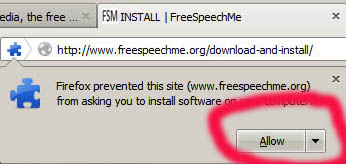
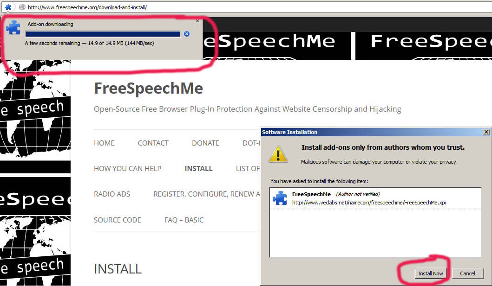
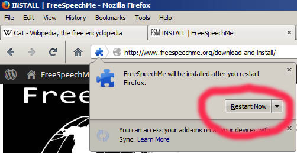
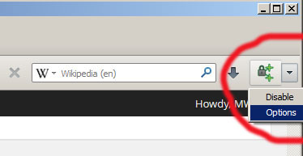
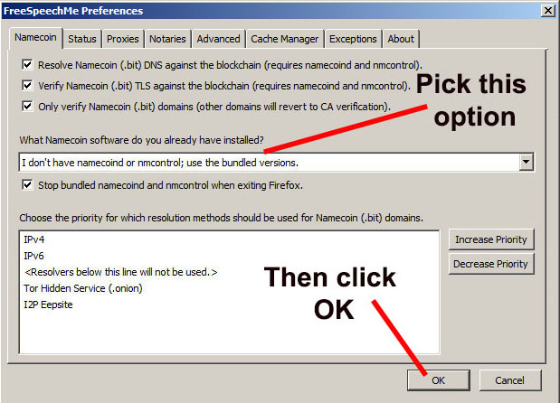

Installation
You can install by clicking this link from Firefox: download unavailable, see notice at top of page.
Next, you will get this pop-up. Click “Allow”:

You will see a download bar in the top left, and almost simultaneously, another pop-up about only allowing software from authors you trust. Click “Install Now”:

(In the future, we intend to submit FreeSpeechMe to the Mozilla Add-Ons website, which would remove these scary security warnings.)
You'll get a dialog box asking you to restart Firefox. Click "Restart Now".

If you already have both the Namecoin Client and NMControl installed, then you're done. Scroll down to "Making sure it works". If not, you'll need to tell FreeSpeechMe to use the bundled versions. Look for the new icon near the top-right corner of Firefox. Click the arrow, and click Options.

On the resulting dialog box, click the Namecoin tab. Select “I don’t have namecoind or nmcontrol; use the bundled versions” from the drop-down menu. Then click “OK”.

You probably don't need to mess with the other settings and tabs unless you're the kind of person who likes tinkering with things.
If you're on Windows, two black command prompt windows will pop up. Minimize them, but don't close them. If you close them by accident, FreeSpeechMe will stop working until you go back to the Options dialog and click OK again. (Our latest internal beta hides the command prompt windows for your convenience. They are already hidden on GNU/Linux.)
You might get a warning (or multiple warnings) from your firewall software, asking whether namecoind or nmcontrol should be allowed to access the network. You should allow access.
The bundled Namecoin client will now begin downloading the Namecoin blockchain. This usually takes about an hour, but might take longer or shorter than that depending on your Internet connection and system specs. You can use Firefox normally in the meantime, but you will need to keep Firefox running for the blockchain download to keep going.
After a while you can go back into the Options dialog and click the Status tab, which will show you how much of the blockchain (measured in blocks) has downloaded. If it says "namecoind not responding, try again in a couple minutes", then either namecoind is still booting or maybe it crashed. Click OK and try again later. If it instead shows a block count, compare it to the latest block shown on a Namecoin block explorer such as https://namecha.in/. Once the block count matches, you should be able to visit .bit websites (see the next section of this page).
{kind=link}
{kind=link}
{kind=link}
{kind=link}
{kind=link}
{kind=link}